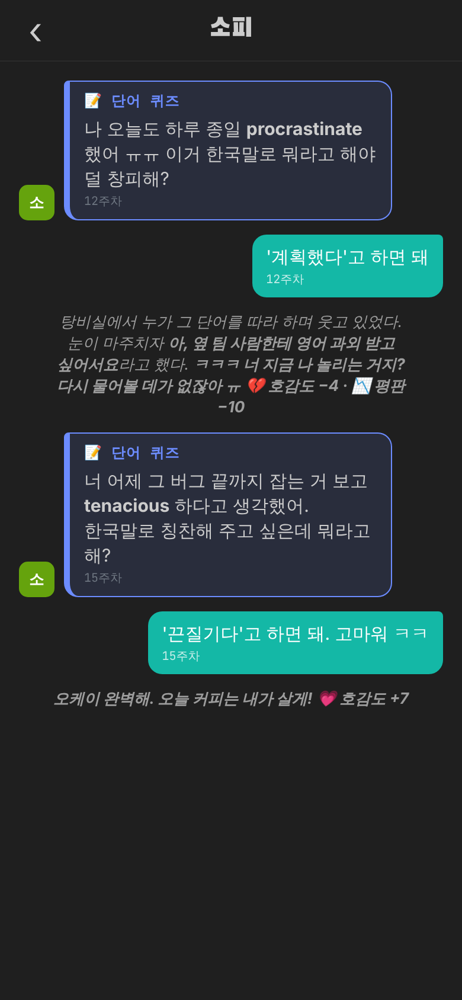

소피 공략
외국계 옆 팀 PM, 재미교포 소피. 호감도는 2주마다 오는 한국어 퀴즈로만, 퀴즈 정답·오답 수치와 무결점 엔딩 「통역 필요 없음」 확률까지
외국계 회사 옆 팀 PM, 재미교포. 영어 섞인 한국어로 「이거 한국말로 뭐야??」를 물어 오는, 회사에서 제일 밝은 사람이에요.
- 외국계 · 글로벌테크 지사에 들어가면 첫 주에 인사 + 첫 퀴즈가 와요(외국계 제안: 16주차~, 비즈니스 영어 + 코딩력 90).
- 호감도는 2주마다 오는 퀴즈(정답 +5 / +7 / +9)와 일상 대사(+2)로만 올라요. 데이트로는 안 올라요.
- 퀴즈를 다 맞히면 엄청 빨라요: 시뮬레이션 입사 17주 → 썸 33주 → 연애 39주 → 결혼 60주 🚀 그 회차 퀴즈를 하나도 안 틀리면 무결점 엔딩까지!
소피는 실력 대신 국어 실력(?)으로 공략하는 히로인이에요 😆 「'검토해 보겠습니다'가 yes인 줄 알았는데 no래」, 「'썸'이 뭐야?」 같은 질문에 제대로 알려 주면 호감도가 쑥쑥 오르고, 틀린 걸 알려 주면 그녀가 회의에서 그대로 써 버려요… 평판까지 깎이니 진지하게 풀어 주세요.
만나는 조건#
| 항목 | 조건 |
|---|---|
| 회사 | 외국계 · 글로벌테크 지사 재직 중 (칭호 필요 없음) |
| 외국계 가는 법 | 헤드헌터 「외국계 기업 포지션이에요」: 16주차~, 기술 「비즈니스 영어」 + 코딩력 90, 외국계 경력 없음. 자세한 건 승진·커리어 글 |
| 첫 메시지 | 외국계에서 맞는 첫 주 마감에 「Hi! 옆 팀 PM 소피야 👋」 + 첫 퀴즈가 같이 와요 |
| 시작 호감도 | 0 (회차 보너스 「연애 세포」는 적용돼요) |
| 잠금 | 그 회차에 이미 썸·연애 상대와 헤어졌거나 고백을 거절해 새 인연이 잠겼다면 첫 메시지가 아예 안 와요 |
| 떠나면 | 외국계를 떠날 때 썸 미만이면 영영 떠나요. 썸 이상이면 계속 연락·퀴즈가 와요 |
인사에는 어떤 답을 해도(읽씹도) 만남이 시작돼요. 「Hi! Nice to meet you too」(영어로 답하기)는 스트레스 -2 덤이 있어요.
호감도 올리는 법#
소피는 다른 히로인과 달리 데이트로 호감도가 안 올라요. 오르는 길은 2개뿐이에요.
| 방법 | 호감도 | 틀리거나 안 하면 |
|---|---|---|
| 📝 2주마다 오는 퀴즈 정답 (아래 고유 시스템) | 쉬움 +5 · 보통 +7 · 어려움 +9 | 오답 -4 · 평판 -10 / 읽씹 -5 |
| 💬 매주 일상 대사에 따뜻한 답 | +2 | 차가운 답 -5 / 읽씹 -10 |
썸 · 고백 · 청혼 메시지의 답도 호감도를 올려 주지 않아요(단계만 바뀌어요). 데이트는 청혼 진도(60)를 쌓는 용도로만 쓰세요.
고유 시스템: 교포 친구 퀴즈#
- 주기
- 첫 퀴즈는 인사와 같은 주, 그 뒤로 마지막 퀴즈가 온 주부터 2주마다 1문제
- 문제 은행
- 한국어 100문제(쉬움 38 · 보통 43 · 어려움 19). 한 회차에 같은 문제는 다시 안 나와요
- 정답
- 쉬움 +5 · 보통 +7 · 어려움 +9
- 오답
- 호감도 -4, 평판 -10
- 읽씹
- 호감도 -5 (오답과 같이 「실수」로 기록)
- 표시
- 선택지에 효과가 안 보여요(정답이 티 나니까요). 결과 말풍선 끝에 「💗 호감도 +n」이 떠요

문제 종류는 한국어 단어, 콩글리시, 회사 줄임말, 시차, 관용 표현, 맞춤법 같은 것들이에요. 첫 퀴즈(쉬움)는 「디렉터한테 처음 인사할 때 쓰는 그 표현」인데, 정답은 「'잘 부탁드립니다'라고 하면 돼」예요 😉
소피는 매주 일상 대사 1통을 보내요(썸 전·썸 12개, 연애 8개, 결혼 10개). 따뜻한 답 +2(대신 체력·스트레스·돈이 조금 들어요), 차가운 답 -5, 읽씹 -10. 퀴즈가 없는 주에도 꼭 답해 주세요.

무결점 확률 (시뮬레이션)#
「통역 필요 없음」 엔딩은 결혼 + 그 회차에 온 퀴즈를 하나도 안 틀리고 읽씹도 0이어야 해요. 문제당 정답률별로 실제 문제 은행·주기로 20,000번 돌려 봤어요.
| 소피를 만난 주 | 100주까지 퀴즈 수 | 정답률 98% | 95% | 90% | 80% |
|---|---|---|---|---|---|
| 17주 | 42 | 43.3% | 11.8% | 1.2% | 0.02% |
| 25주 | 38 | 46.1% | 14.0% | 1.7% | 0.03% |
| 40주 | 31 | 53.2% | 20.4% | 3.9% | 0.1% |
| 60주 | 21 | 64.9% | 33.8% | 11.4% | 0.8% |
정답률 100%면 당연히 100%예요. 한 문제라도 헷갈리면 그 회차 무결점은 끝이라, 국어사전 옆에 두고 푸는 게 정석이에요 📚 늦게 만날수록 퀴즈가 적어 무결점은 쉬워지지만, 결혼까지 시간이 빠듯해져요.
| 엔진 시뮬레이션 (17주 입사, 데이트 3칸) | 썸 | 연애 | 결혼 | 엔딩 |
|---|---|---|---|---|
| 퀴즈 전부 정답 (40판) | 33주 | 39주 | 60주 | 결혼 100% · 통역 필요 없음 100% |
| 퀴즈 정답률 80% (40판, 평균 8문제 틀림) | 37주 | 43주 | 64주 | 결혼 100% · 통역 필요 없음 0% |
몇 문제 틀려도 결혼은 충분히 가요. 다만 무결점 엔딩은 한 문제로 끝이에요.
썸 → 고백 → 연애#

- 썸 초대 (호감도 80, 아무와도 안 사귈 때)「강변에서 night market 한대」 → 「가자. 메뉴판은 내가 다 읽어 줄게」. 「주말엔 좀 쉬고 싶어」는 그녀가 떠나요(잠금은 없음).
- 썸 기간속도 1이라 퀴즈·일상 대사 그대로 올라요. 시뮬레이션상 만나고 약 15주에 썸, 그 뒤 약 6주에 고백.
- 고백 (100)「I really like you. 한국말로는… 너 좋아해. 이거 맞지?」 → 「맞게 말했어. 나도 좋아해」 또는 「발음은 50점인데 마음은 100점」(스트레스 -5). 「좋은 동료로 남고 싶어」는 떠나고 잠금.
결혼 조건#
연애 중 데이트 진도 60 + 호감도 100 → 「'여보'. …아직 발음 이상하지? … Will you marry me?」 → 「응. 여보 발음은 내가 평생 고쳐 줄게」 (스트레스 -8). 「아직은 준비가 안 됐어」는 -15, 다시 안 와요.
소피는 데이트로 호감도가 안 오르지만, 진도 60은 데이트 횟수로만 쌓이고, 연애 중 데이트 0번인 주는 -30이 똑같이 적용돼요. 데이트 3번/주면 연애 후 약 20주(시뮬레이션: 39주 → 60주).
동거 · 신혼 · 육아#
셋 다 없어요. 소피 루트에는 동거 제안, 신혼, 아기 제안이 오지 않아요(은서·소현·은혜와 같아요). 결혼 후엔 집안일만 챙기면 돼요(0번인 주 -30).
엔딩 전부#
- 조건
- 100주차에 소피와 사귀는 중(미혼)
- 보상
- 레어 카드팩 1
- 조건
- 진도 60 + 호감도 100 → 그녀의 청혼 수락 → 100주차에 결혼 중
- 보상
- 레어 카드팩 1
- 조건
- 소피 결혼 엔딩 조건 + 그 회차 퀴즈 오답 0 · 읽씹 0
- 보상
- 에픽 카드팩 1
결혼 + 무결점이면 「통역 필요 없음」과 「babe에서 여보까지」가 함께 기록돼요.
실패 · 이별 조건#
| 상황 | 결과 | 피하는 법 |
|---|---|---|
| 썸 미만에서 외국계를 떠남(이직·프리랜서) | 소피 영영 떠남 | 썸이 되기 전엔 이직 금지 |
| 퀴즈 오답 · 읽씹 | -4(평판 -10) / -5, 무결점 실패 | 모르면 찾아보고 답하기 |
| 일상 대사 읽씹 | -10 | 매주 답장 |
| 연애 중 데이트 0번 | -30 + 「babe, 이번 주 한 번도 못 봤네…」 | 데이트 1칸 이상 |
| 호감도 0 | 「우리 그냥 친구로 지내는 게…」 이별(붙잡기 30%, -50만 원) | 연속 오답 조심 |
| 썸 초대 · 고백 · 청혼 거절 | 떠남 / 떠남 + 잠금 / 청혼 다시 안 옴 | 수락 |
추천 공략 루트#
- 1~15주코딩력 90 + 기술 「비즈니스 영어」 준비.
- 16주~외국계 헤드헌터 「지원한다」 → 메신저 탭 맨 위 제안 수락.
- 입사 첫 주인사 + 첫 퀴즈 「'잘 부탁드립니다'라고 하면 돼」.
- 매주일상 대사 따뜻한 답, 2주마다 퀴즈 정답. 다른 히로인은 썸 초대 거절(소피가 썸 초대를 보내려면 아무와도 안 사귀어야 해요).
- 약 33주 썸 → 39주 연애데이트 3번 이상 유지.
- 약 60주 청혼 수락그 뒤는 집안일만 챙기면 100주차 결혼 엔딩.
자주 묻는 질문#
- 향수나 픽업 아티스트의 노트가 소피에게도 먹혀요?
- 네. 소피는 장비 보너스 제외 대상이 아니라 퀴즈·일상 대사로 오르는 호감도에 +5% / +10%가 붙어요(은혜만 제외).
- 썸이 된 뒤에 외국계를 떠나도 돼요?
- 네. 썸 이상이면 회사 밖에서도 연락과 퀴즈가 계속 와요.
- 영어나 일본어로 플레이하면 문제가 달라요?
- 네. 언어마다 자기 문제 은행이 있어요(영어·일본어는 84문제).
- 퀴즈를 한 번 틀렸는데 결혼 엔딩은요?
- 결혼 엔딩 「babe에서 여보까지」는 그대로 받을 수 있어요. 「통역 필요 없음」만 그 회차엔 불가능해요.